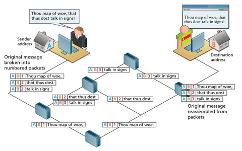
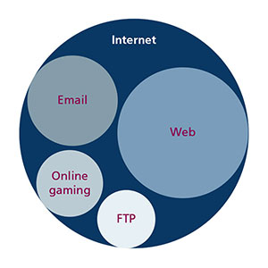
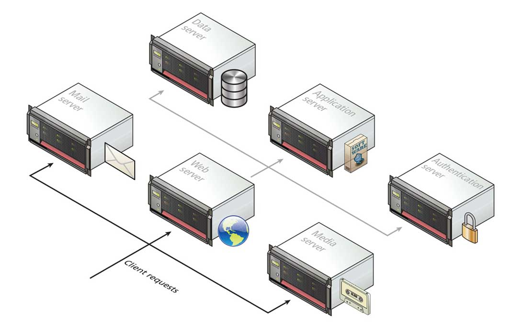
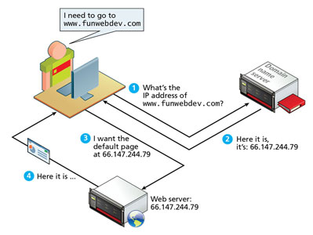
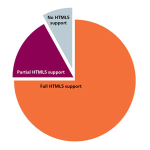

There is a complexity in web architecture and technology.There are many different components that perform simultaneously to allow the web to function in our society. I have divided this report into five different sections to understand the development and the functionality of how the web works. These sections involve, the internet, history of the web, how web pages are delivered, HTML-CSS and the future of the web.
The majority of us have used the internet in some shape of form and we tend not to question its existences. Society has taken advantage of this technology providing us a new form of functionality in our lives. The internet is a group of computer networks communicating with each other through digital signals with defined protocols. We currently use this technology for social communication, entertainment, business, academic research and a way to bring us to the digital world. For us to grasp the internet’s possibilities we must understand its building blocks and intention of its creation.

In the 1969 the first computer network created was ARPANET. It was created for academic research using four university computers. It was used exclusively to share
digital information and resources to academic scholars. The method of communication that were using was based on a packet switching network. It would split messages
into smaller chunks called packets and routes them to the appropriate place based on the destination address
1. This allowed information to be sent across multiple
pathways.
The network research started to grow and connected into branches of university campuses and research institutions in the United States. During this period other
alternative networks were also created such as X.25, USENET, NPL and CYCLADES. As more networks started to appear, there was difficulty in these various networks
to communicate with each other. This major problem was solved by implementing a suite of protocols
2 to unify the networks adopting the TCP/IP model. This expanded
the connections between networks providing text base internet experience to be sent around world. Further improvements were made by Tim Berners-Lee and Robert Cailliau
who introduced the World Wide Web changing the experience of the internet.
The web also known as the World Wide Web. It commonly misunderstood as the internet.The web is a subset application that provides informational mediums through the internet. It was developed when a computer scientist named Tim Berners-Lee noticed the difficulty in sharing information between different computers. Each computer had its own unique program which needed to be learnt to communicate. Tim Berners-Lee and Robert Cailliau provided a solution to this problem. The idea was to have universal space in the internet in which we could use.
Tim Berners-Lee was working in CERN and had vision of a new application on the internet to manage digital information. He published a document called Information Management: A Proposal in 1989 which laid out the foundation of the application (the web). It propose new fundamental technology that computers could use to communicate using a universal language. It used Uniform Resource Locator (URL) and hypertext system (HTTP and HTML) to function. Robert Cailliau provided the proposal of a hypertext system with Tim Berners-Lee.
As the foundation of the web developed, Tim, Robert and others realised the true potential of the application and advocated to share this technology to the public. In 1993 a declaration by CERN's directors provided this technology to the public royalty free. This changed the dynamics of the world and provided growth in innovation in the internet. This led to the creation to Netscape Navigator which was most popular web browser in its period for public use. Due to the massive growth of the web Tim started to work in MIT and founded the World Wide Web Consortium (W3C) to develop an international standard for the web. This provided new business opportunities to be on the internet which started the Dot-com bubble in 1995 to 2001. There were many start-up companies created during this period and only a few manage to survive becoming giant tech corporations such as Amazon, Google and eBay.
From the development of the internet and the web our perception of digital information has changed dramatically. Web pages (Websites) played an impotent role on the development of how our society
communicates and functions. As a web developer it is important for us to understand how they are delivered. Internet Protocols are used as a set of rules of how information is passed through the internet.
They would work behind the scenes for web developers
3 traveling data based on the TCP/IP network modal. This allows digital information to pass through Web Servers, Web Browsers and Domain Name System’s
that are involved in the delivery of websites.
A web server is a dedicated computer that is continuously active. It stores data information
of a website so people could visit them on a web browser. The web server would listen to queries, receives requests
and response back to client with the web page. Web servers communicate with multiple devices exchanging information simultaneously. There is a high demand on web servers. This issue is usually resolved by using
a server farm strategy. This strategy would distribute incoming requests to multiple servers to prevent excessive overload of requests. Server farm would have multiple servers using a load balancer device to
split the functionality of a website
4.These servers are split into application servers, data servers, mail servers, media servers and authentication servers.
We use the web browser every day to access multiple web pages on the internet. It is a software program that displays readable content to the public by translating programming languages written by web developers. Depending on your operating systems a different web browsers would be used providing a particular feature and design. The most known web browsers are Google Chrome, Firefox, Safari, Opera and Internet Explorer.
When using web servers and web browser we need to know its location to access data of a web page. This is usually achieve through locating its IP address on the internet. The IP address would be composed of binary or hexadecimal digits.It would be time consuming and difficult to remember all IP address for a website. So domain names were introduced. A Domain Name System (DNS) was developed to distribute these websites more efficiently translate IP address into domain names and vice versa.
HTML and CSS are the foundation of every website. HTML deals with the written text structure and CSS deals with the visual layout of a web page. It is not necessary to use high-level programming languages such as JavaScript, PHP and Python but it is essential for every web page to have HTML and CSS.
HTML was developed as a baseline standard for written text on web pages. The World Wide Web Consortium are the key players
on its development. At the beginning poorly written HTML were written for web pages which caused major problems.Developed web browsers were able to handle sloppy HTML
5 which caused unpredictable responses of web pages.
XHTML and validators was introduce to provide a stricter syntax to solve this issue. As XHTML was not backwards compatibility,websites needed to update their code. During this period HTML5 was being developed and had a different approach.
It focused less on the purity of semantics and aimed to be integrated with the exiting web. It has been recommended by W3C that all current websites are developed using HTML5. As there was importance
of HTML, CSS was used to manipulate its text.
CSS is used to modify the visual presentation
6 of HTML on web pages. The World Wide Web Consortium have provided recommended guidelines of using this programming language in adaption with HTML. It is best practice that HTML is not used
for formatting and styling a web page. Cascading Style Sheets (CSS) should be used instead. The benefit of using CSS on the appearance of HTML is allow control over formatting, site maintainability, accessibility, page download speed and
the flexibility of the output. CSS would have a separate file that interacts directly with HTML. This allows CSS to manipulate the font, colours, sizes, background images and position of elements of HTML. The current recommend version for CSS is
CSS3.
The Web 2.0 is the current phase of web applications. It is based on dynamic websites that is more driven to the user’s web experience. It involves the user that could contribute and consume web content
6. An example of these dynamic websites
would be Facebook, YouTube and Instagram. Web developers started to integrate high-level programming languages into their websites. Job positions have also been divide into Front-End, Backend and Full Stack development due to its complexity.
There are currently many different trends that are involved in Web 2.0 and we are still questioning its transitions into the Web 3.0.
Predicting the future for the Web 3.0 is a difficult task and some believe that we have already reached it with the development of the internet of things, the integration of artificial intelligence, semantic webs, virtual web or block chain websites. These current predictions of the development of Web 3.0 could be all true with its own trajectory into the future. Determining the next phase of the web and internet, there will be a need of a universal approval towards its functionality in our society.